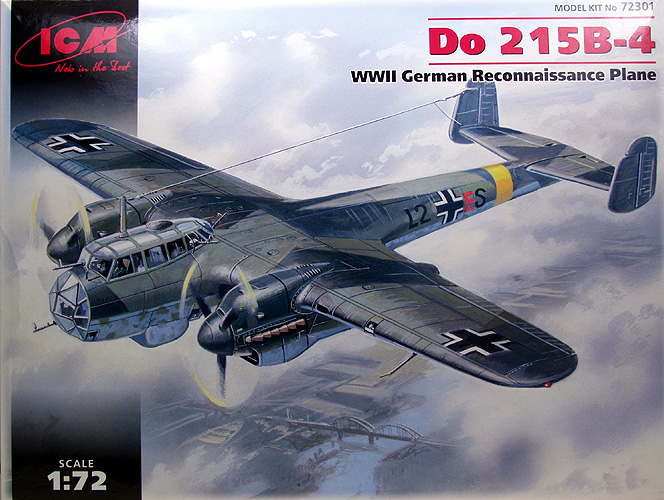
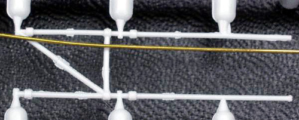
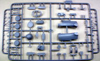
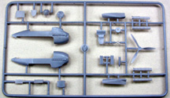
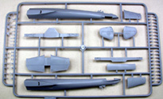
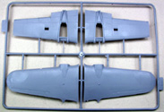
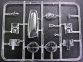
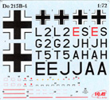
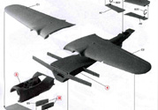

{kind=link}
{kind=link}
{kind=link}
{kind=link}
{kind=link}
{kind=link}
{kind=link}


1/72 Scale Do 215B-4

ICM kit # 72301
MSRP $17.95
Images and text Copyright © 2007 by Gary Buchanan
Developmental Background
The Dornier Do 215 was essentially a 17Z powered by Daimler-Benz DB 601a liquid cooled engines. This came about as a result of Dornier soliciting orders from foreign countries, specifically Yugoslavia, which was already tooling up for the Do 17K version. The RLM insisted on assigning a new designation for export versions and hence the 17Z was redesignated 215. Initially it was to be equipped with Gnome-Rhone 14 cylinder radial engines but these didn't offer a sufficient improvement in performance over the 17K that was just going into production in Yugoslavia. However, when the DB 601's were installed it showed a significant improvement in performance and as a result Sweden placed orders for 18 aircraft. Before these could be delivered, an embargo was placed on exporting bombers and the order went instead to the Luftwaffe for reconnaissance duties. Dornier was ordered to continue producing the 215 for the Luftwaffe. Several versions were built, The original order for Sweden were designated B-0 and B-1 variants when taken over by the Luftwaffe. These were modified on the assembly line for long range reconnaissance tasks. The B-2 designation was allocated to a pure bomber variant but none were built. The B-3 designation was applied to two examples supplied in early 1940 to the Soviet Union under the Russo-German agreement. The B-4 variant differed from the B-1 variant in its camera equipment. The main cameras were mounted in a fairing below the lower gunner's position and an additional camera was mounted on the inside of the crew hatch. The B-5 designation was given to airframes that were modified to the night fighter role. These were found to be much better at the task than the 17Z's that had been similarly modified due to the better performance provide by the DB-601 engines. In all 101 of the 215's were built.
The Kit
The recently released Do 215B-4 kit is a welcome addition to the available 1/72 scale kits especially for us Do 17 series enthusiasts. The kit comes in a top open two part box, the top being rather thin but the bottom is made from a heavier corrugated cardboard. The box top has a nice rendition of the subject going about its primary business of reconnaissance. Inside the box we find five sprues of light gray plastic and one sprue of clear plastic. All of the sprues were bagged in a single cellophane bag and some of the parts showed some scuffing but not to the level of being a problem. The large parts had some light flash that will need to be cleaned up and the surface, though shiny, had a slight amount of texture to it. Whether it is enough to be a problem after priming and painting remains to be seen. It's not as bad as the orange peel effect seen on other limited run kits. The panel detail is recessed and it about as fine as normally seen on 1/72 scale kits. It's mostly uniform but I found a few places that will need to be re-scribed. I found a couple of sink marks that will need to be addressed on the engine nacelles and the forward fuselage.
The forward section is molded separately to accommodate other versions. The control surfaces are all molded in place. As is typical with short run kits there are no alignment pins. This shouldn't be a big problem with the wings as the top halves are molded with the entire wing tip and the entire aileron, which forms an alignment box of sorts for the bottom wing half. The tail plane is done in a similar fashion. The wing structure is unusual in that it has a front and rear spar. These pass through the fuselage and extend to the wheel wells in the nacelles and box in the front and rear of the wheel wells. The upper wing has structural detail molded in as does the two spars where they show in the wheel wells. This should create a really strong wing to fuselage joint. The forward spar creates the rear wall of the cockpit and detail gets added to it during assembly. The kit includes a surprising amount of cockpit detail for a 1/72 scale model, there is structural detail and equipment boxes molded into the cockpit side walls in addition to other radio and equipment boxes that are installed separately. 
The observer and gunners seats are very finely molded, as are the guns, which look very delicate and includes separate ammo housings and shell collection bags. The aircraft carried five flexible mount machine guns and the kit includes 35 additional ammo housings that get mounted in various places about the cockpit. The landing gear assemblies are very complete and complex and this kit includes some of the finest and small diameter parts I have ever seen in a kit. They look to be to be extremely delicate and will be a challenge to remove from the sprues and clean up and assemble without damaging them. In the photo below a .018 diameter wire has been set next to part of the landing gear assembly for comparison purposes.
ICM has announced that they will also be releasing a Do 17Z-2 and a Do 215B-5 night fighter, which will be essentially the same kit with additional parts. The kit appears to contain most of the parts to build the night fighter version including the solid nose a different instrument panel, shrouds for the exhaust stacks and the solid nose with guns. There are also two glass noses, one with and one without a place for a flexible mount gun. Many of the small parts have flash to be cleaned up most notably the crew seats and due to the delicate nature of some of these parts, clean up will be tedious. Altogether there are 196 gray parts.




You may click on the small images above to view larger pictures

The clear parts are injection molded and not bad but not the best I have seen either. They should improve some with a coat of Future. The framework is slightly raised which should help in masking. There are also two lower gunner's positions as well. Altogether there are 12 clear parts on the sprue as shown at right and that brings the total for the kit to 208 parts, quite a few for a kit this size but again they don't all get used.
The decals are thin and the larger markings well registered but it appears that they might be a bit translucent. Markings are provided for three aircraft, one stationed in France during August of 1941, One stationed in Finland in July of 1941 and one stationed in the Ukraine in August of 1941. 

The decals include some almost microscopic stenciling some of which is not very well registered but they will be difficult to see without a magnifier.
The instructions consist of two 10 3/4" x 15 3/4" pages folded and stapled to form an eight page booklet. The instruction sheet appears to use photos or cad 3D representations of the actual parts rather than just drawings, which I thought was a nice touch. See scan at left for an example.
The first page is a sprue map with parts not used on this version marked as not for use. The next three pages are assembly layouts with no written text but part numbers and color call outs only. The next page has a brief history and some cross section drawings of the fuselage front end and engine nacelle, which appear to be from historic data. It gives one a good idea where to put all those extra ammo cans and is a nice touch for detailing in general. The last three pages are profiles showing colors and marking locations of the three aircraft included on the decal sheet as well as a paint color chart with Model Master reference numbers and the usual safety instructions for using paint and glue.
Conclusions
For the most part this kit impresses me, considering its all injection molded the level of detail for the scale is really nice. That same fidelity of detailing may be its downfall as some of the small parts are extremely fragile and will be very difficult to clean up and assemble without damaging them. While in the process of putting one of the sprues back in the bag I put a bit of a twist on the sprue and fractured a number of the fine parts along one edge. Those with a light touch and a lot of patience should be able to create a nicely detailed model but I would recommend it only to experienced modelers with steady hands and good eyesight.